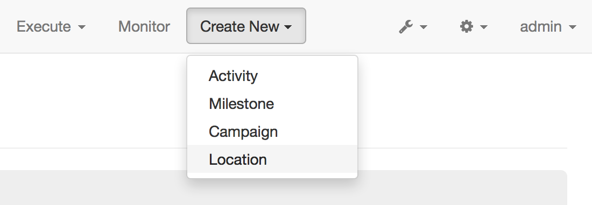
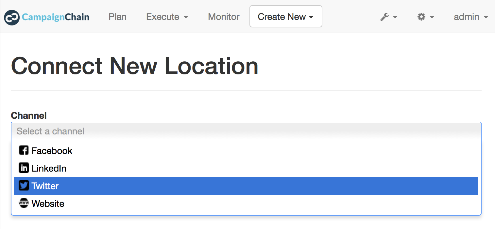
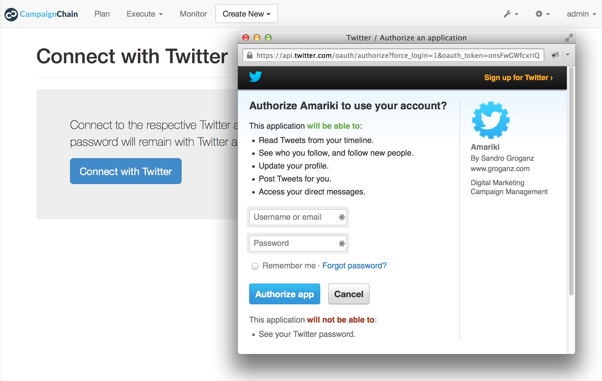
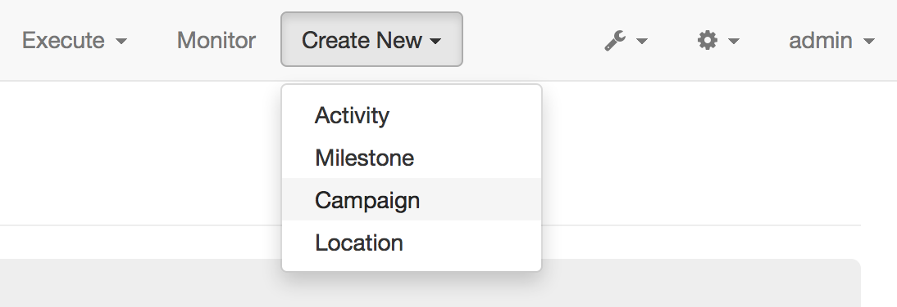
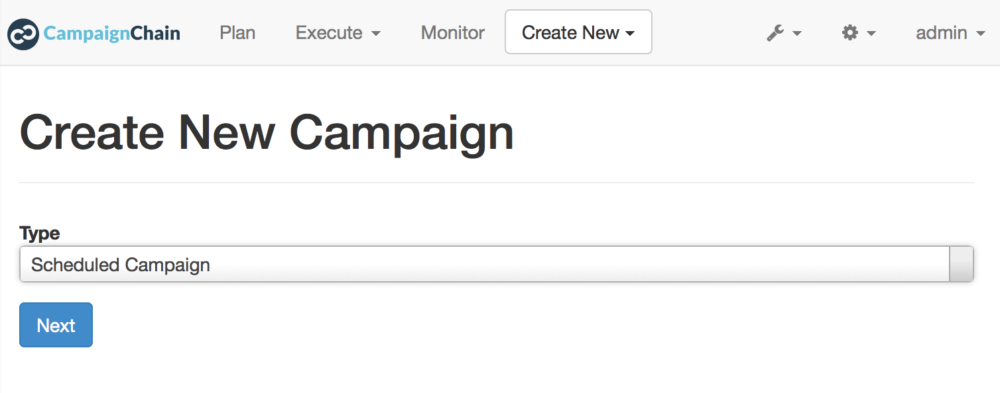
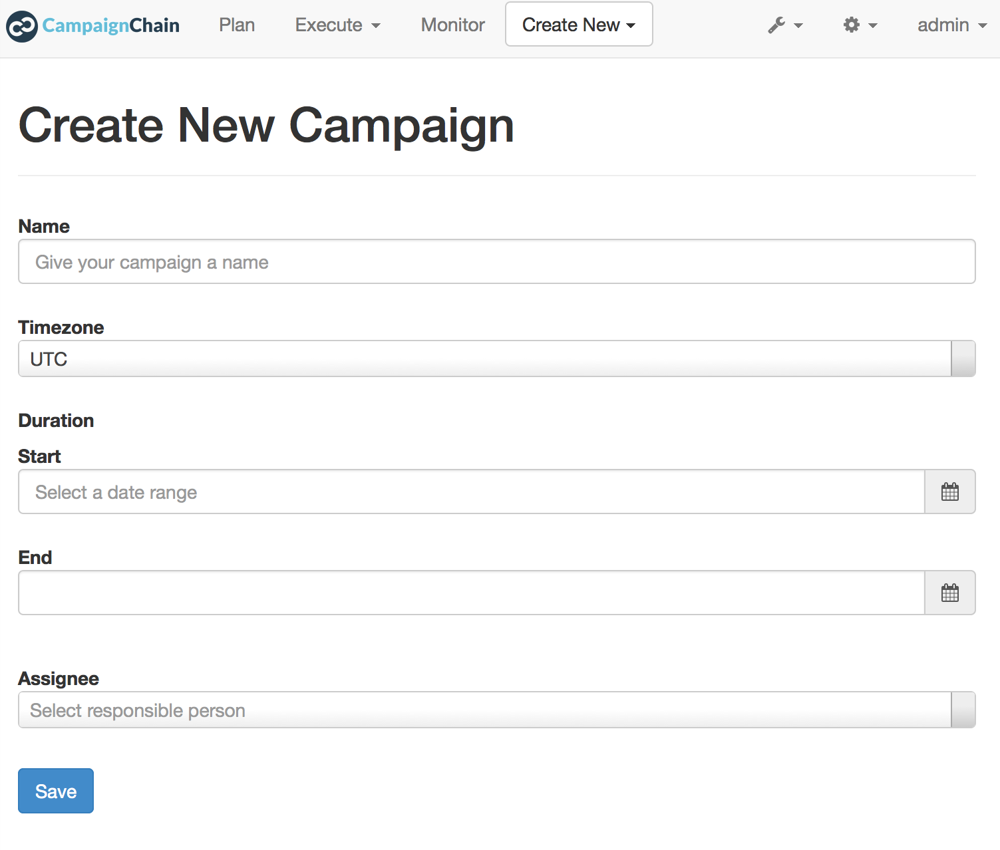
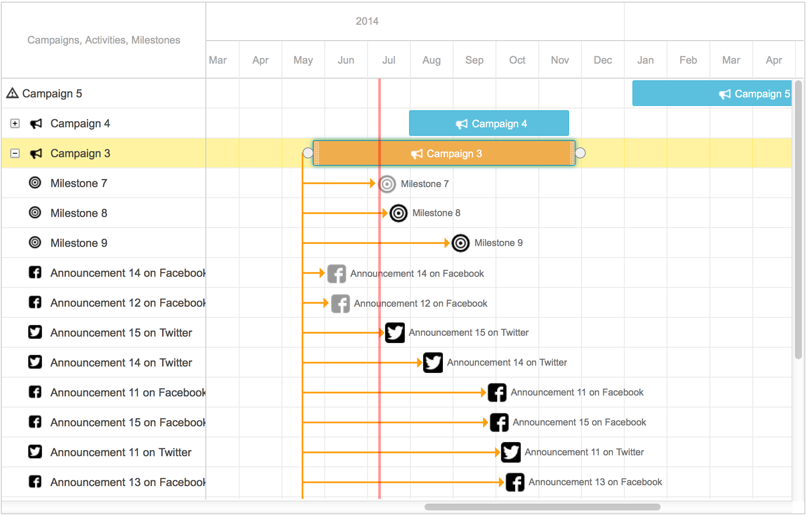
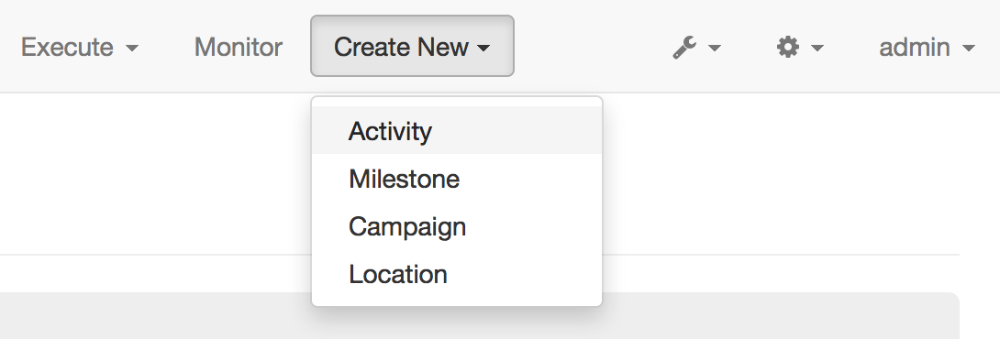
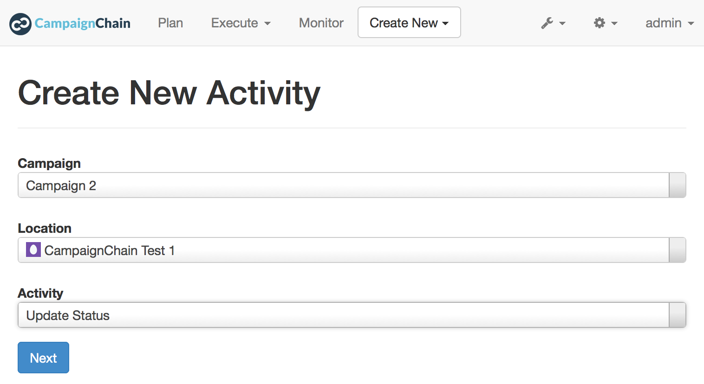

This is a brief step-by-step guide on how to create your first marketing Campaign and Activity within CampaignChain. You will learn how to connect Twitter as a Channel and how to post a Tweet on the stream of the related Twitter user account.
To connect a Twitter Channel with CampaignChain, click the Create New button in the header menu and choose Location.
On the next screen, select Twitter as the Channel and click Next.
Note
Should you now see the Provide Application Credentials screen, then please ask the CampaignChain administrator to do this for you and proceed as follows.
When clicking the button Connect with Twitter, the login screen for Twitter will be displayed to you. Please enter your Twitter user name and your Twitter password.
If Twitter accepted your credentials, the stream of the Twitter user you logged in as will now be available as a Channel Location within CampaignChain.
An Activity such as posting on Twitter can only be created from within a Campaign. Click the Create New button in the header and choose Campaign.
Select the campaign type Scheduled Campaign and proceed with Next.
Fill in the fields to populate your new Campaign with data, such as:
Click Save and your first Campaign will be created.
If you now click Plan in the header navigation, you will see your new Campaign in the Timeline.
Now you are ready to create your fist Activity, which will be posting a status update on Twitter.
Click the Create New button in the header and choose Activity.
In the next screen, select your newly created Campaign and in the Location field, pick the Twitter user stream you just connected to.
Once you have selected the Location, a new field will appear which allows you to select the Activity you want to perform within the Location. Here, choose Update Status and click Next.
A form will appear and prompt you to insert the following data:
That’s it! If you now click Plan again, you will see the new Activity as part of your new Campaign.
{kind=link}
{kind=link}
{kind=link}
{kind=link}
{kind=link}
{kind=link}
{kind=link}
{kind=link}
{kind=link}
{kind=link}